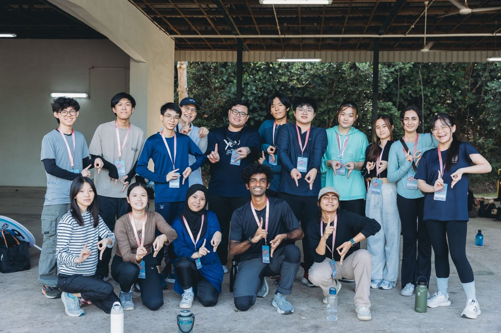

Leadership & CCA
Leadership

SP Orientation Camp Leader
As an Orientation Group Leader for Singapore Polytechnic's freshman orientation in 2023, I:
- Mentored 15 incoming students through their transition to polytechnic life
- Designed and facilitated team-building activities to foster connections
- Developed conflict resolution skills mediating group dynamics

NYC Leaders Camp
Participating in the National Youth Council Leaders Camp through SYLP helped me:
- Discover my leadership style through personality assessments
- Develop strategic planning skills through community project simulations
- Build confidence in public speaking and team facilitation